Spring MVC Web架构是基于阻塞式Servlet API构建的。Servlet 3.1后提供了非阻塞API，Spring 5.0后基于这些API构建了一套全新的非阻塞Web框架 —— WebFlux。Spring Boot 2.0基于Spring 5.0构建，所以要在Spring Boot中使用WebFlux架构，版本必须大于2.0。
通过下面这张图了解下Spring MVC和Spring WebFlux的区别：
 https://www.cnblogs.com/javabg/p/7976977.html
https://www.cnblogs.com/javabg/p/7976977.html
可以看到，Spring WebFlux是非阻塞式的，支持 Reactive Streams背压，并在Netty，Undertow和Servlet 3.1+容器等服务器上运行。其目前只支持非关系型数据库，如Mongo，Redis等。非阻塞式的编程模型可以提高程序的并发量，提升性能和吞吐量。
异步Servlet
既然WebFlux是基于异步Servelt API构建的，那么我们先来看看什么是异步Servlet。
使用IDEA创建一个传统的Java Web应用（可以参考https://www.cnblogs.com/javabg/p/7976977.html），然后创建一个SyncServlet：
1 | (urlPatterns = "/sync") |
doGet方法中线程阻塞2秒，然后打印hello。部署项目到Tomcat，context-path为/servlet，启动后访问http://localhost:8080/servlet/sync:
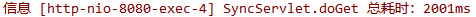
传统的Servlet API是阻塞的，log.info("总耗时：" + (System.currentTimeMillis() - start) + "ms")这行代码必须等待this.execute()执行完毕后才开始执行。
接下来看看非阻塞Servlet API是怎么搞的。新建一个AsyncServlet：
1 | (urlPatterns = "/async", asyncSupported = true) |
在类上使用@WebServlet(asyncSupported = true)开启异步支持，通过AsyncContext asyncContext = request.startAsync();获取异步上下文AsyncContext，AsyncContext的complete方法用于标识异步调用结束。CompletableFuture为Java 8提供的Future接口实现类，可以方便的处理异步调用。
启动项目，访问http://localhost:8080/servlet/async，响应耗时也在2秒左右，但是这个过程是异步的，查看控制台日志就可以证明这点：
所以，异步调用适用于那些对方法返回值没有影响的操作，比如异步记录用户操作日志等。如果方法的返回值依赖于异步调用的结果，那么方法耗时在同步和异步上是没有区别的。
Mono和Flux
了解了异步Servlet后，我们回到WebFlux，新建一个SpringBoot程序，版本为2.1.3.RELEASE，并引入spring-boot-starter-webflux依赖：
1 | <dependency> |
Reactor 是Spring WebFlux所使用的响应式库，其提供了两个特殊的类Mono和Flux。
Mono和Flux在发布订阅模式中都属于发布者（不清楚的可以参考Java 9 Flow API学习），查看源码会发现它们都实现了Publisher接口。
Mono表示0 ~ 1个元素的数据发布者，Flux表示 0 ~ N个元素的数据发布者。我们可以通过一个例子来了解Mono和Flux，创建MonoFluxTest类：
1 | public class MonoFluxTest { |
程序首先创建了一个订阅者（参考Java 9 Flow API学习），然后分别使用Flux.fromArray和Mono.fromSupplier构造了Flux类型发布者和Mono类型发布者，并和订阅者保持订阅关系。
运行main方法，控制台输出：
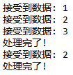
了解了Mono和Flux后，我们新建一个TestController：
1 |
|
execute方法返回一个值hello，所以可以使用Mono来处理返回值，使它成为一个异步方法。asyncMono方法返回Mono<String>类型，也就是一个String类型的数据发布者，我们不用去手动处理订阅关系，Spring会帮我们处理，我们直接返回即可。
启动项目，可以看到WebFlux默认使用的是Netty服务器：
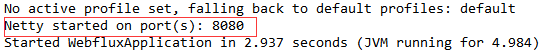
分别访问http://localhost:8080/sync和http://localhost:8080/async/mono，控制台输出如下：
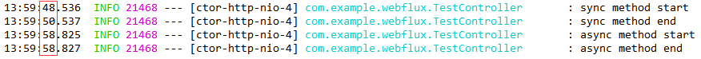
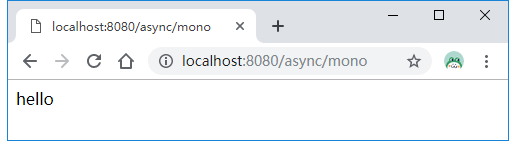
可以看到asyncMono方法里的Mono<String> result = Mono.fromSupplier(this::execute)是异步非阻塞的，并且http://localhost:8080/async/mono返回的值为字符串hello。
下面我们来看一个返回类型为Flux<String>类型的例子。
Server Sent Events
返回值类型为Flux的时候，它是一个数据流，不是一次性数据包，服务端会不断地（假如Flux数据长度大于1）往客户端发送数据。这时，客户端不会关闭连接，会一直等着服务器发过来的新的数据流。这种模式称为Server-Sent Events。
在TestController新增一个asyncFlux方法：
1 | (value = "async/flux", produces = MediaType.TEXT_EVENT_STREAM_VALUE) |
@GetMapping必须通过produces指定数据类型为text/event-stream，重启项目，访问http://localhost:8080/async/flux：
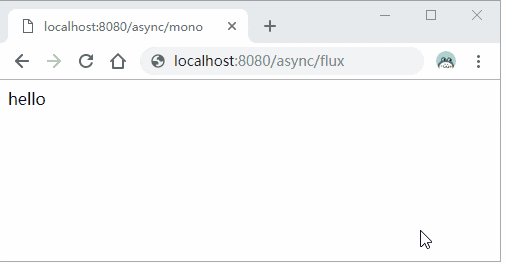
前端可以通过H5的EventSource来接收。
引入thymeleaf依赖：
1 | <dependency> |
然后在resources/templates下新建flux.html：
1 |
|
需要调用es.close()来关闭事件流，不然EventSource会在数据传输完毕会自动重连，这样就会不间断的调用localhost:8080/async/flux请求了。
添加一个ViewController，用来访问flux.html：
1 |
|
重启项目，访问http://localhost:8080/flux，浏览器控制台输出如下所示:
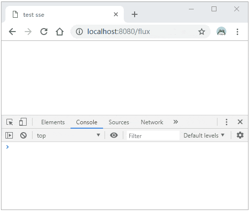
Mono,Flux常用方法
通过上面的例子，我们简单了解了Mono和Flux的用法和区别，下面我们列举一些它们的常用方法。
源头操作
Flux
可以通过Flux类的静态方法来生成：
just()：可以指定序列中包含的全部元素。创建出来的 Flux 序列在发布这些元素之后会自动结束。fromArray()，fromIterable()和fromStream()：可以从一个数组、Iterable 对象或 Stream 对象中创建 Flux 对象。empty()：创建一个不包含任何元素，只发布结束消息的序列。error(Throwable error)：创建一个只包含错误消息的序列。never()：创建一个不包含任何消息通知的序列。range(int start, int count)：创建包含从 start 起始的 count 个数量的 Integer 对象的序列。interval(Duration period)和interval(Duration delay, Duration period)：创建一个包含了从 0 开始递增的 Long 对象的序列。其中包含的元素按照指定的间隔来发布。除了间隔时间之外，还可以指定起始元素发布之前的延迟时间。
举些例子：
1 | public static void main(String[] args) throws InterruptedException { |
输出如下所示： 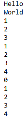
上面的这些静态方法适合于简单的Flux序列生成，当序列的生成需要复杂的逻辑时，则应该使用generate()或create()方法。
generate()
generate()方法通过同步和逐一的方式来产生 Flux 序列。序列的产生是通过调用所提供的 SynchronousSink 对象的 next()，complete()和 error(Throwable)方法来完成的：
1 | Flux.generate(sink -> { |
输出如下所示:

如果不调用 complete()方法，所产生的是一个无限序列。
create()
create()方法与 generate()方法的不同之处在于所使用的是 FluxSink 对象。FluxSink 支持同步和异步的消息产生，并且可以在一次调用中产生多个元素：
1 | Flux.create(sink -> { |
Mono
Mono 的创建方式与之前介绍的 Flux 比较相似。Mono 类中也包含了一些与 Flux 类中相同的静态方法。这些方法包括 just()，empty()，error()和 never()等。除了这些方法之外，Mono 还有一些独有的静态方法：
fromCallable()、fromCompletionStage()、fromFuture()、fromRunnable()和fromSupplier()：分别从 Callable、CompletionStage、CompletableFuture、Runnable 和 Supplier 中创建 Mono。delay(Duration duration)：创建一个 Mono 序列，在指定的延迟时间之后，产生数字 0 作为唯一值。ignoreElements(Publisher<T> source)：创建一个 Mono 序列，忽略作为源的 Publisher 中的所有元素，只产生结束消息。justOrEmpty(Optional<? extends T> data)和justOrEmpty(T data)：从一个 Optional 对象或可能为 null 的对象中创建 Mono。只有 Optional 对象中包含值或对象不为 null 时，Mono 序列才产生对应的元素。
举些例子:
1 | Mono.just("are").subscribe(System.out::println); |
输出:
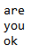
还可以通过 create()方法来使用 MonoSink 来创建 Mono：
1 | Mono.create(sink -> sink.success("Hello")).subscribe(System.out::println); |
中间操作
filter
对流中包含的元素进行过滤，只留下满足 Predicate 指定条件的元素：
1 | Flux.range(1, 10).filter(i -> i % 2 == 0).subscribe(System.out::println); |
输出前10偶数。
take
take 系列操作符用来从当前流中提取元素。提取的方式可以有很多种。
take(long n)：按照指定的数量来提取。takeLast(long n)：提取流中的最后 N 个元素。takeUntil(Predicate<? super T> predicate)：提取元素直到 Predicate 返回 true。
4 takeWhile(Predicate<? super T> continuePredicate)： 当 Predicate 返回 true 时才进行提取。
举些例子：
1 | Flux.range(1, 20).take(10).subscribe(System.out::println); |
reduce 和 reduceWith
reduce 和 reduceWith 操作符对流中包含的所有元素进行累积操作，得到一个包含计算结果的 Mono 序列。累积操作是通过一个 BiFunction 来表示的。在操作时可以指定一个初始值。如果没有初始值，则序列的第一个元素作为初始值。
比如：
1 | Flux.range(1, 10).reduce((x, y) -> x + y).subscribe(System.out::println); |
第一行语句对流中的元素进行相加操作，结果为 55；第二行语句同样也是进行相加操作，不过通过一个 Supplier 给出了初始值为 10，所以结果为 65。
merge
merge操作符用来把多个流合并成一个 Flux 序列：
1 | Flux.merge( |
输出 0 0 1 1。
buffer
直接看例子吧：
1 | Flux.range(1, 100).buffer(20).subscribe(System.out::println); |
输出如下所示：
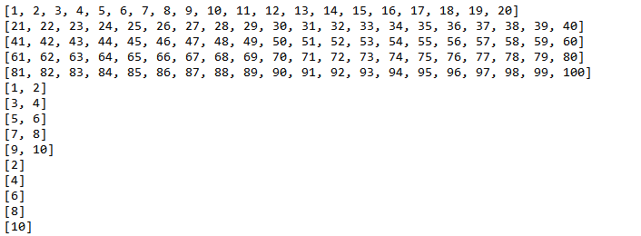
类似于数据流分区。
zipWith
将两个流的元素安装元素位置一一组合：
1 | Flux.just("a", "b", "c", "d") |
输出：
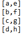
没有配对上的被丢弃。
另外一个例子：
1 | Flux.just("a", "b", "c", "d") |
输出如下:
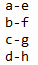
flatMap
把流中的每个元素转换成一个流，再把所有流中的元素进行合并。
比如：
1 | Flux.just(5, 10).flatMap( |
终端处理
通过subscribe()方法处理正常和错误消息：
1 | Flux.just(1, 2) |
输出:
1 | 1 |
出现错误时返回默认值：
1 | Flux.just(1, 2) |
输出：
1 | 1 |
出现错误时使用另外的流：
1 | Flux.just(1, 2) |
输出如下:
1 | 1 |
源码链接：https://github.com/wuyouzhuguli/SpringAll/tree/master/57.Spring-Boot-WebFlux
参考链接: